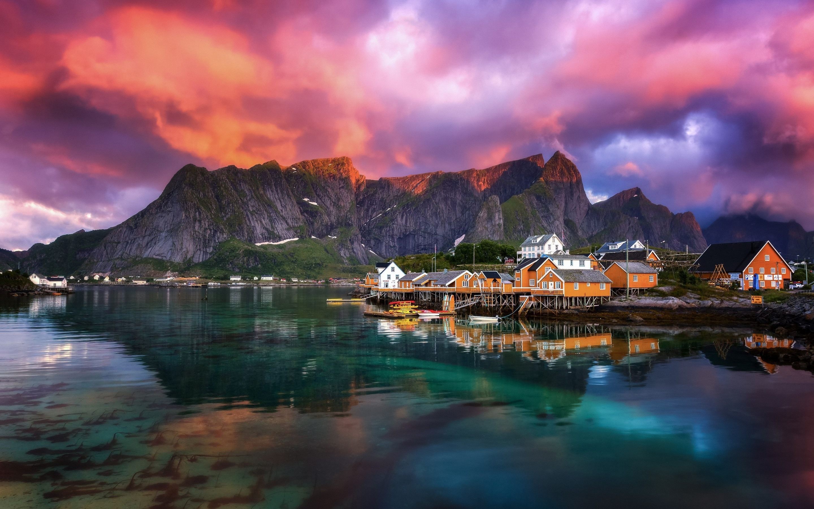

A Noruega, é um país localizado na parte nórdica da Europa, e a Oeste da península Escandinava, banhada pelo oceano Atlântico, com fronteiras terrestres com a Suécia, Finlândia e Rússia. Existe uma parte da Noruega, situada no Círculo Polar Ártico, onde no verão, o sol raia durante 24h por dia, e a partir disso, surgiu a origem do termo "Terra do Sol da Meia-Noite."
A costa litorânea da Noruega é muito extensa, com diversos golfos e montanhas, o que geram belíssimas paisagens, dignas de ótimas fotografias, e cenários incríveis, dignos de serem apreciados!
A Noruega, é um país desfrutante de excelente qualidade de vida. De acordo com o relatório de uma pesquisa feita pela ONU (Organização das Nações Unidas), esta nação possui o maior Índice de Desenvolvimento Humano (IDH) do mundo: 0,938. O país possui um ótimo serviço de saneamento ambiental, atendendo todas as residências, possuindo também uma incrível taxa de mortalidade infantil, apenas 3 óbitos a cada 1000 nascidos, e todos os habitantes acima de 15 anos, são 100% alfabetizados! E ai, que tal uma visita?
O fenômeno mais conhecido na Noruega, e um dos mais admirados no mundo inteiro, são as luzes da Aurora Boreal, de acordo com a mitologia nórdica, as luzes da Aurora Boreal representam a vinda dos deuses para a Terra, enquanto dançam e abençoam os seres humanos, presenciar a Aurora Boreal, é uma dádiva para o povo que cultua a mitologia nórdica, além de ser um espetáculo aos olhos!
| Tabela de Informações | |||
| Capital | Oslo | ||
| Área | 385.203 km² | ||
| Moeda | Coroa Norueguesa | ||
| Governo | Monarquia constitucional parlamentarista unitária | ||
| Rei Atual | Haroldo V | ||
| População | 5,368 Milhões | ||
| Principais Cidades | Oslo, Bergen, Stavanger, Trondheim, Tromsø | ||
| Idioma | Noruguês (Oficial), Lapão | ||
| PIB | 450 Bilhões de Dólares | ||
| PIB Per Capita | 82.465 Dólares | ||
A culinária norueguesa, é famosa por ser relativamente simples, e muito conhecida por assim como boa parte da Europa, aprecisar os frutos do mar, e todas as especiarias maritimas, assim como, também são excelentes adoradores de frutas, e boa parte de suas receitas as ultilizam. Aqui esta um exemplo desta culinária, deveras apreciável:
A Noruega, assim como todos os países nórdicos, tiveram envolvimento (e ainda hoje, em vários países, existes convenções, festas, cerimônias e até mesmo culturas ainda utilizadas) com a era dos Vikings! Os Vikings eram barbaros, que com seus grandes navios de guerra, exploravam os oceanos atrás de tesouros, e bens de valor, assim como quase todos os povos, os Vikings também tinha suas crenças, e acreditam nos deuses nórdicos! Tais como Odin, Thor, Freya, Loki, Fenrir e diversas outras divindades.
Os vikings fundaram diversas cidades e colônias, inclusive Dublin, na Irlanda e a região da Normandia, na França. Dublin foi considerada uma colônia importante por mais de três séculos. Entre os anos de 879 e 920 d.C., eles colonizaram a Islândia, que, por sua vez, tornou-se um ponto de apoio para a colonização da Groenlândia. Vestígios de um vilarejo viking em L’Anse aux Meadows em Terra Nova, no Canadá, são do ano 1.000 d.C., de acordo com testes de carbono.
Como um pequeno povo muito espalhado conseguiu conquistar tantos territórios? Os vikings noruegueses eram famosos por sua visão corajosa e fatalista, o que os transformava em um povo que aceitava os riscos naturalmente. Os grupos saqueadores pareciam ter uma capacidade incrível de abstrair perdas, tanto em batalhas em terra quanto em perigosas expedições marítimas. O número de mortes causadas pelas guerras às vezes era assustadoramente alto se comparado à população viking total, isso se faz por eles acreditarem que ao morrer em combate, de forma heróica como um guerreiro, após desencarnar, o guerreiro se juntaria ao palácio de Valhala, e poderia ceiar com os deuses em suas cerimônias (até o dia do Ragnarok), mas mesmo assim, isso não satisfez a fome de conquistas e exploração desse povo por perca de 250 anos.
Os exploradores vikings levaram sua identidade cultural para a Europa continental, mas também importaram culturas, línguas e conhecimento estrangeiro. Nos anos 1.100, os vikings estavam enfraquecidos por causa de disputas domésticas e da resistência de outros países europeus, que haviam aprendido, depois de muito sofrer, a se defender contra os ataques através da construção de fortificações.